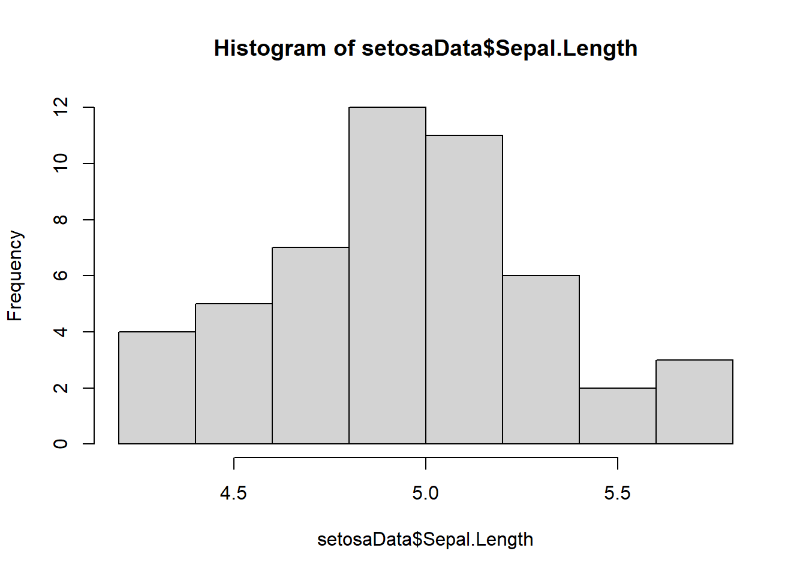
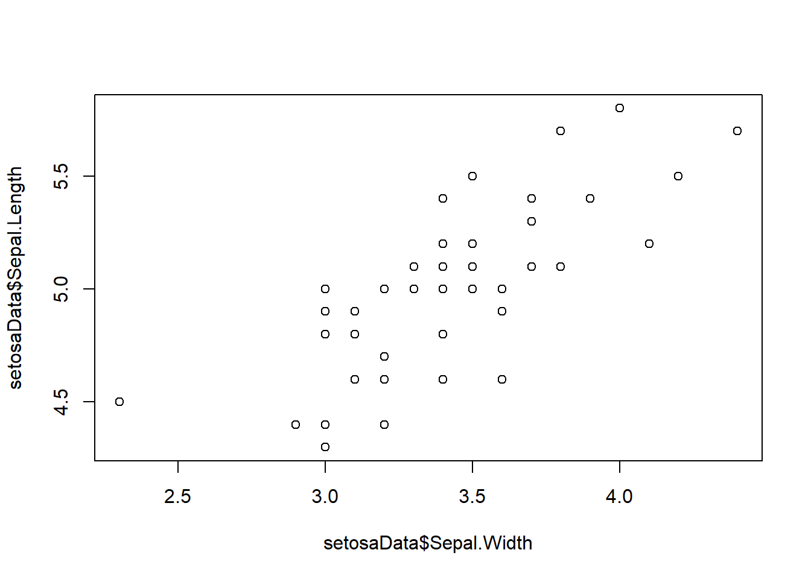
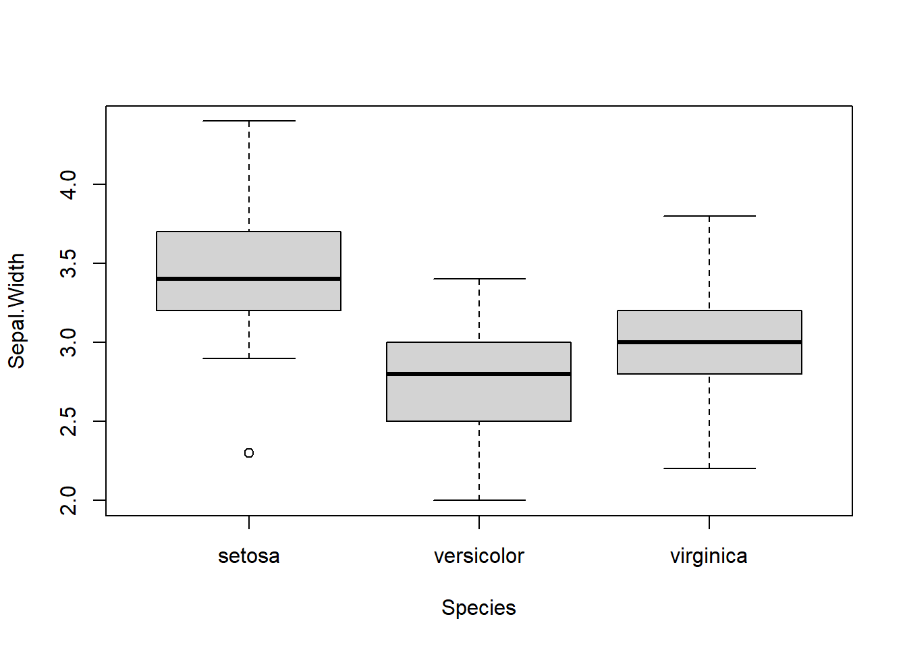

2.4 Dataframes
Dataframes are like matrices, only not. They have a row/column structure like matrices and are also rectangular in nature. But, they can hold more than one data type!
Dataframes are made up of atomic vectors.
This is probably the data structure that we will use most in this book, along with atomic vectors.
Let’s make a dataframe to see how it works.
# Make a new object 'a' from a sequence
a <- seq(from = .5, to = 10, by = .5)
# Vector math: raise each 'a' to power of 2
b <- a^2
# Replicates values in object a # of times
c <- rep(c("a", "b", "c", "d"), 5)
# Note, we don't use quotes for objects,
# but we do for character variables
d <- data.frame(a, b, c)Now we can look at it:
print(d)## a b c
## 1 0.5 0.25 a
## 2 1.0 1.00 b
## 3 1.5 2.25 c
## 4 2.0 4.00 d
## 5 2.5 6.25 a
## 6 3.0 9.00 b
## 7 3.5 12.25 c
## 8 4.0 16.00 d
## 9 4.5 20.25 a
## 10 5.0 25.00 b
## 11 5.5 30.25 c
## 12 6.0 36.00 d
## 13 6.5 42.25 a
## 14 7.0 49.00 b
## 15 7.5 56.25 c
## 16 8.0 64.00 d
## 17 8.5 72.25 a
## 18 9.0 81.00 b
## 19 9.5 90.25 c
## 20 10.0 100.00 dNotice that R assigns names to dataframes on the fly based on object names that you used to create them unless you specify elements of a data frame like this. They are not colnames as with matrices, they are names. You can set them when you make the dataframe like this:
d <- data.frame(a = a, b = b, c = c)Now can look at the names.
# All of the names
names(d)## [1] "a" "b" "c"# One at a time: note indexing, names(d) is a vector!!
names(d)[2]## [1] "b"We can change the names.
# All at once- note quotes
names(d) <- c("Increment", "Squared", "Class")
# Print it to see what this does
names(d)
# Or, change one at a time..
names(d)[3] <- "Letter"
# Print it again to see what changed
names(d)We can also rename the entire dataframe.
e <- dHave a look:
# Head shows first six
# rows by default
head(e)## a b c
## 1 0.5 0.25 a
## 2 1.0 1.00 b
## 3 1.5 2.25 c
## 4 2.0 4.00 d
## 5 2.5 6.25 a
## 6 3.0 9.00 b# Or, we can look at any
# other number that we want
head(e, 10)## a b c
## 1 0.5 0.25 a
## 2 1.0 1.00 b
## 3 1.5 2.25 c
## 4 2.0 4.00 d
## 5 2.5 6.25 a
## 6 3.0 9.00 b
## 7 3.5 12.25 c
## 8 4.0 16.00 d
## 9 4.5 20.25 a
## 10 5.0 25.00 bWe can make new columns in data frames like this!
# Make a new column with the
# square root of our increment
# column
e$Sqrt <- sqrt(e$Increment)
eLooking at specific elements of a dataframe is similar to a matrix, with some added capabilities. We’ll do this with a real data set so it’s more fun. There are a whole bunch of built-in data sets that we can use for examples. Let’s start by looking at the iris data.
# This is how you load built-in
# data sets
data("iris")Play with the functions below to explore how this data set is stored in the environment, and how R sees it. This is a good practice to get into in general.
# We can use ls() to see
# what is in our environment
ls()
# Look at the first six rows
# of data in the object
head(iris)
# How many rows does it have?
nrow(iris)
# How many columns?
ncol(iris)
# What are the column names?
names(iris)
# Have a look at the data structure-
# tells us all of the above
str(iris)
# Summarize the variables
# in the dataframe
summary(iris)Now let’s look at some specific things.
# What is the value in 12th row
# of the 4th column of iris?
iris[12, 4]## [1] 0.2# What is the mean sepal length
# across all species in iris?
mean(iris$Sepal.Length)## [1] 5.843333What about the mean of Sepal.Length just for setosa?
A couple of new things going on here:
We can refer to the columns as atomic vectors within the dataframe if we want to. Sometimes we have to do this…
Note the logical check for species
What we are saying here is, “Hey R, show me the mean of the column Sepal.Length in the dataframe iris where the species name is setosa”
mean(iris$Sepal.Length[iris$Species == "setosa"])## [1] 5.006We can write this out longhand to make sure it’s correct (it is).
logicalCheck <- iris$Species == "setosa"
lengthCheck <- iris$Sepal.Length[iris$Species == "setosa"]We can also look at the whole data frame just for setosa. We will quickly switch over to using syntax that is a litter easier to understand for this, but this approach is at the core of pretty much all of those.
# Note that the structure of species
# is preserved as a factor with three
# levels even though setosa is the
# only species name in the new df
setosaData <- iris[iris$Species == "setosa", ]
str(setosaData)## 'data.frame': 50 obs. of 5 variables:
## $ Sepal.Length: num 5.1 4.9 4.7 4.6 5 5.4 4.6 5 4.4 4.9 ...
## $ Sepal.Width : num 3.5 3 3.2 3.1 3.6 3.9 3.4 3.4 2.9 3.1 ...
## $ Petal.Length: num 1.4 1.4 1.3 1.5 1.4 1.7 1.4 1.5 1.4 1.5 ...
## $ Petal.Width : num 0.2 0.2 0.2 0.2 0.2 0.4 0.3 0.2 0.2 0.1 ...
## $ Species : Factor w/ 3 levels "setosa","versicolor",..: 1 1 1 1 1 1 1 1 1 1 ...Finally, once we are working with dataframes, plotting becomes much easier to understand, and we can ease into some rudimentary, clunky R plots.
# Some quick plotting code
# Once we have a nice dataframe like
# these ones, we can actually step into
# The world of exploratory analyses.
# Make a histogram of sepal lengths
hist(setosaData$Sepal.Length)
# Bi-plot
plot(setosaData$Sepal.Width, setosaData$Sepal.Length)
# Boxplots
boxplot(Sepal.Width ~ Species, data = iris)
Much, MUCH more of this to come as we continue.